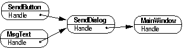
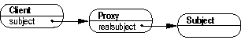

Vespe Savikko
Software Systems Laboratory
Tampere University of Technology
FIN-33101 Tampere, Finland
vespe@cs.tut.fi
The choice of implementation language affects the use of design patterns. Naturally some languages are better applicable for different tasks than others. Each language has its own set of strengths and weaknesses. In this paper we implement some of the better known design patterns in Python, whose object model is quite different from that of conventional object-oriented languages. Thus we acquire some insight into the generality of the patterns in the context of Python.
1 Introduction
In software engineering the term pattern describes a proven
solution to a common problem in a specific context. Patterns can be
divided into three
different categories depending on their level of abstraction and
implementation language independency: architectural patterns, design
patterns and idioms [BMR+96]. In this work we concentrate on the
latter two categories: design patterns as they are
described in what is known as the GANG
OF FOUR -book (GOF for
short) [GHJV95] and Python language
idioms.
The patterns are not only microarchitectural models but also
useful as a
common design vocabulary among software engineers. The overall
architecture of the system and related design decisions can be
explained by giving a set of patterns used. While new patterns do emerge
the GOF still remains as the definite reference on
design patterns. For this reason it is important to introduce these
patterns, the notions and the theory behind them and their applicability
to Python community.
GOF is divided into three parts and each part describes the patterns related to the theme of the part. The themes describe the purpose of the patterns. Creational patterns address object instantiation issues. Structural patterns concentrate on object composition and their relations in the runtime object structures. Whereas the structural patterns describe the layout of the object system, the behavioral patterns focus on the internal dynamics and object interaction in the system.
While the design patterns strive to be language independent they still require - at least implicitly - some support from the implementation language and especially from its object model. In GOF the languages of choice are C++ and Smalltalk. Therefore the availability of access specifiers and static member functions (class methods) are assumed. The aim here is to look at some GOF patterns and try to implement them in a language (Python) whose object model is radically different from that of C+By doing this we can draw some conclusions about the generality of GOF patterns and what accommodations - if any - are necessary when applying them in Python programming environment. And while operating on the programming language level we look at some Python idioms and how they can help implement GOF patterns.
We begin with a short description of Python as an object language in Section 2 and then move on to the selected patterns. We have chosen one pattern from each category of GOF: Singleton (creational, Section 3), Chain of Responsibility (behavioral, Section 4) and Proxy (structural, Section 5). In Section 6 we sum up the lessons learned and further discuss the generality of our implementation solutions.
The other remarkable thing about Python objects is that they are not merely instances of their classes; their structures can change in runtime. This level of flexibility combined with the ability of the instance to trap attribute access lays a foundation for various Python idioms. On the other hand it also requires some restraint from the programmer, because overly ``dynamic'' code can be very difficult to understand and maintain. This applies also to the Python programs in general; while the language makes it easy to achieve relatively complex tasks, it does not relieve us programmers from the demands of the sound design principles.
3 Singleton
Singleton pattern provides a mechanism to limit the number of the
instances of the class
to one. Thus the same object is always shared by different parts of
the code. Singleton can be seen as a more elegant solution to global
variable because actual data is hidden behind Singleton class
interface. First we look at how Singleton can be implemented in C++ and then provide a Python solution with the same features.
class Singleton {
public:
static Singleton& Handle();
private:
static Singleton* psingle;
Singleton();
Singleton( const Singleton& );
Singleton& operator=( const Singleton& );
};
Figure 1. Singleton class definition in C++ |
Our minimal Singleton class definition (Fig. 1) has only one public member: class method Handle. Defined interface is not very useful as such, because the client can do nothing with the instance, but now we concentrate only on the techniques that ensure only one Singleton instance at a time.
Private constructor forbids creating an object outside the class. Thus the clients of the class have to rely on the static member function Handle: it either creates a new instance or returns a reference to the Singleton object (Fig. 2).
Singleton& Singleton::Handle() {
if( !psingle ) {
psingle = new Singleton;
}
return *psingle;
}
Figure 2. Class method Handle |
Because Python has no private constructors we have to find some other way to prevent instantiations. Our approach in Figure 3 is to raise an exception if the Singleton object is already instantiated (private class attribute __single is other than None). The exception object is the Singleton instance! The downside of this solution is that it requires the clients to be prepared for the exception. It could also be argued that using exceptions for other purposes than error handling is not very good style. These concerns can be avoided to some extent by providing a similar Handle function than in Figure 2. This function hides the unorthodox instantiation details and returns a reference to the Singleton object (Fig. 4).
class Singleton:
__single = None
def __init__( self ):
if Singleton.__single:
raise Singleton.__single
Singleton.__single = self
Figure 3. Singleton class in Python |
Due to Python's type system the code in Figure 4 works for the whole Singleton hierarchy. Consider the following situation: class Singleton has subclasses Child and Junior as shown in Figure 5. Because there exists an is-a relationship between base class and a subclass there can be only one instance of the whole hierarchy. Singleton or Junior instance can be created with Handle function. The constructor of the Child class takes one - explicit - argument so the instantiation must be done with the direct constructor call or a specialized handle function. The following code demonstrates the Singleton hierarchy:
>>> child = Child( 'Monty' ) >>> junior = Handle( Junior ) >>> junior.name() 'Monty' >>> single = Handle() >>> single <Child instance at d1d88>Sometimes it is convenient to decide at runtime which Singleton class is instantiated. GOF proposes a registry-based approach where the client consults a special registry object, which contains a list of name-Singleton pairs. By requesting a Singleton by-name, the client receives a reference to the corresponding Singleton instance. Updating the registry may be problematic: Who does register a Singleton? If it is Singleton instance itself (in its constructor) then every possible Singleton must be instantiated in order to be accessible by the clients of the registry!
Fortunately simplification is possible through Python's namespace concepts. Local and global scopes - or rather their dictionary representations - can be accessed via locals and globals functions. For example one can instantiate Junior:
>>> name = 'Junior' >>> sclass = globals()[name] >>> junior = Handle( sclass ) >>> junior <Junior instance at d1bd8>Of course, now the registry (scope dictionary) contains much more than only Singleton-related information, so there is always a risk that a client treats some function as a Singleton class. This unhappy coincidence can be avoided to some extent by using some naming convention for Singletons. A specific registry object is a good idea even in Python environment. Clients should not access scope dictionaries directly but through the registry. Now the registry can detect and deny any Singleton lookups that are illegal according to the agreed naming convention. Again, this approach depends on the courtesy of the clients.
Perhaps the most foolproof and straightforward solution is to do the registration on the module level. Each module that contains Singleton classes should also contain initialization statements that register the class names with the registry module. Because modules are initialized only for the first time they are imported, a client gains access to the registry by importing the registry module. In a way a module can be thought of as a rudimentary Singleton. One advantage of this explicit registration approach is the option to implement as sophisticated a registry database as needed. In other words we can store more information about Singletons than just the class names, for example module names, base classes, different constraints and so on. The registry can also offer different services for Singleton lookup, statistics and debugging, for example.
def Handle( x = Singleton ):
try:
single = x()
except Singleton, s:
single = s
return single
Figure 4. Handle function |
class Child( Singleton ):
def __init__( self, name ):
Singleton.__init__( self )
self.__name = name
def name( self ):
return self.__name
class Junior( Singleton ):
pass
Figure 5. Singleton subclasses |
Chain of Responsibility pattern is often used in the context of
graphical user interfaces
where one widget may contain several other widgets. As the windowing
environment generates events the widgets either handle them or pass
them to their parent widget (container), as in
Figure 6.
4 Chain of Responsibility
The motivation behind Chain of Responsibility pattern is to create a
system that can serve different requests in a hierarchical manner. In
other words if an object that is a part of the system does not know how
to respond to the given request it passes it along the object
tree. As the name implies, each object along the route of the request
can take the responsibility and serve the request.
|
 Figure 6. A simple window hierarchy |
If MsgText receives an event its Handle method either handles the event or calls the Handle method of the SendDialog and so on. MsgText need not know which object - if any - will handle the event; the hierarchy does not have to be fixed. In some other context an MsgText object would behave similarly and so hierarchies can be modified at runtime. The hierarchy need not necessarily be tree-like. One variation of the pattern could be a system where objects create a ring-like structure and some or all of the objects could act as clients as well as part of the chain.
Implementing the pattern in C++ is relatively straightforward: in our GUI example each object would be a subclass of the Widget class defined in Figure 7. While this is also a feasible solution in Python, it does not use Python's object model to the full potential. A more dynamic and flexible approach is to use the techniques introduced in Guido van Rossum's Command Dispatch pattern [vR97]: dynamic attribute lookup and addition.
class Widget {
public:
Widget( Widget* pw ): pwParent( pw ) {}
virtual void Handle( Event );
private:
Widget* pwParent;
};
Figure 7. Widget class definition |
With Python we need not restrict ourselves to the predefined set of methods as we did with with Widget hierarchy: the only way to handle the event was by Handle call. The idea behind the Command Dispatch pattern is to check at runtime whether the object has a proper method or not. Our Widget class in Python (Fig. 8) provides its subclasses with this dispatch mechanism. The use of the separate event class (Event in Figure 8) emphasizes the fact that various kinds of information can be transmitted through the chain. Only the name attribute is assumed. Because new attributes can be added dynamically and new methods can be added through subclassing, the interface of the base Event class can be kept to a minimum.
class Event:
def __init__( self, name ):
self.name = name
class Widget:
def __init__( self, parent = None ):
self.__parent = parent
def Handle( self, event ):
handler = 'Handle_' + event.name
if hasattr( self, handler ):
method = getattr( self, handler )
method( event )
elif self.__parent:
self.__parent.Handle( event )
elif hasattr( self, 'HandleDefault' ):
self.HandleDefault( event )
Figure 8. Event and Widget classes in Python |
When an event object is passed to Handle method, one of the four things may happen:
class MainWindow( Widget ):
def Handle_close( self, event ):
print 'MainWindow: ' + event.name
def HandleDefault( self, event ):
print 'Default: ' + event.name
class SendDialog( Widget ):
def Handle_paint( self, event ):
print 'SendDialog: ' + event.name
class MsgText( Widget ):
def Handle_down( self, event ):
print 'MsgText: ' + event.name
Figure 9. Widget hierarchy classes in Python |
Some Python classes for our GUI example are implemented in Figure 9. The following code builds the chain and demonstrates its use:
>>> mw = MainWindow() >>> sd = SendDialog( mw ) >>> msg = MsgText( sd ) >>> edown = Event( 'down' ) >>> msg.Handle( edown ) MsgText: down >>> epaint = Event( 'paint' ) >>> msg.Handle( epaint ) SendDialog: paint >>> eodd = Event( 'odd' ) >>> msg.Handle( eodd ) Default: oddOne curious aspect of our solution is that an event handler need not necessarily be a method; it can also be a function object. This allows the programmer to add new event handlers to existing objects instead of creating new classes through inheritance. Due to the Python's scoping rules an event function cannot access the attributes of its container object. However, because the event function itself is an attribute it can be deleted. In other words event functions provide means of creating temporary event handlers to an existing Chain of Responsibility hierarchy. A simple example:
>>> def PrintName( e ): ... print 'Name: ' + e.name ... >>> sd.Handle_odd = PrintName >>> msg.Handle( eodd ) Name: odd >>> del sd.Handle_odd >>> msg.Handle( eodd ) Default: odd
From the point of view of the object-oriented design the ability
to trap attribute
access provides some new solutions to old problems. A good example is
the Proxy pattern, which is used when an object has to be shielded from
its clients. There may be a number of reasons for this: reference
counting, different levels of access rights, lazy evaluation of the
state of the object and so on. The runtime object structure for the
pattern is shown in Figure 10.
5 Proxy
|
 Figure 10. Runtime object structure |
The client does not need to know that it is not accessing the real object (Subject) directly. In other words the proxy substitutes for the real thing. In C++ this would mean that both the proxy and the subject class have a common base class. In Python the same effect can be achieved by masquerading the proxy instance as the subject by providing the same method interface. Our proxy class in Figure 11 is based on near-universal Wrapper class [vR96]. As such the Proxy class is only a trivial wrapper for any subject. However, its main function is to serve as a base class for more specific proxy implementations. Because the __gettattr__ method is called only as the last resort the proxy can handle a subject method differently by ``overloading'' it in the proxy class. Let us consider the following situation: we access an instance of class RGB (Fig. 12) first directly, then using a generic Proxy instance as a wrapper and finally via NoBlueProxy instance (Fig. 13):
>>> rgb = RGB( 100, 192, 240 ) >>> rgb.Red() 100 >>> proxy = Proxy( rgb ) >>> proxy.Green() 192 >>> noblue = NoBlueProxy( rgb ) >>> noblue.Green() 192 >>> noblue.Blue() 0
class Proxy:
def __init__( self, subject ):
self.__subject = subject
def __getattr__( self, name ):
return getattr( self.__subject, name )
Figure 11. Proxy base class |
class RGB:
def __init__( self, red, green, blue ):
self.__red = red
self.__green = green
self.__blue = blue
def Red( self ):
return self.__red
def Green( self ):
return self.__green
def Blue( self ):
return self.__blue
Figure 12. Subject class |
class NoBlueProxy( Proxy ):
def Blue( self ):
return 0
Figure 13. More specific proxy implementation |
While Python provides some mechanisms that are usually implemented with the Proxy pattern (for example simple reference counting) the pattern is still highly applicable to the Python community. An excellent example is Daniel Larsson's RemoteCall package [Lar97], which provides a simple mechanism for distributed applications. One of the key concepts in the system is the role of agents, which are client-side representations of the server-side objects - in other words, proxies. The history of the package also demonstrates a noteworthy aspect of patterns in general: the author recognized that he had applied a pattern only after the implementation.
6 Conclusions
GOF patterns and Python can benefit from each other. While Python
lacks some features that GOF assumes, it is not impossible to build
pattern implementations that work like their GOF counterparts. Our
Singleton implementation substituted private constructors with an
exception mechanism and a class method with a regular function but the
underlying pattern is still clearly Singleton. It is important to note
the difference between a pattern and its implementation. In Singleton
our main focus was to maintain the features of the pattern as
described in GOF. This leads to a solution that is probably too
obscure to be recognized as a Python pattern. A more intuitive - and
perhaps Pythonlike - solution would be to abandon any encapsulation
issues and simply provide a factory function for the Singleton
instance [Lun97].
The use of Python as an implementation language can also enhance the pattern. The flexible and dynamic nature of the language provides a good basis for a number of different and elegant solutions. Our Chain of Responsibility implementation makes the pattern more dynamic by implementing it with Command Dispatch pattern, which takes advantage of Python's runtime capabilities. These capabilities include runtime attribute lookup and addition. In other words the instances of the same class need not necessarily have identical structure and attribute access can be monitored and trapped. These mechanisms provide a fairly elegant way to implement various generic classes as in our Proxy implementation.
We have chosen three patterns to emphasize the issues discussed, but we are also confident that other GOF patterns can also be implemented in Python, and with similar results. While the patterns might end up with added dynamic and flexible features after the process, this would not necessarily erode the usability and recognizability of the patterns. The familiarity and the order provided by the use of patterns may offer major benefits for various Python object systems and frameworks.